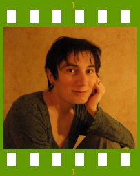
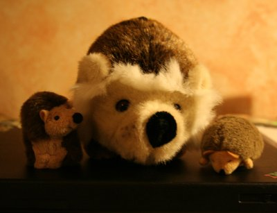

People of openSUSE: Katarina Machalkova

Today’s People of openSUSE features a female YaST developer and the maintainer of ncurses user interface library – Katarina Machalkova!
- Nickname: bubli (it means ‘bubble’ in my language)
- Homepage: http://www.bubli.org (desperately outdated)
- Blog: I’m not really bloggish type of a person – I think I lack the necessary dose of exhibitionism :-)
- Favorite season: Autumn. Not only because I was born in September, but I also like the colors of fallen leaves and autumn sunsets very much.
- Motto: If anything can go wrong, it will, and usually at the most inopportune moment
Please introduce yourself!
I was born … well, already 27 years ago in a small town in western Slovakia. I have been living in Prague, Czech republic, for almost 9 years already (moved there in 1999 to study at the university). Hired by SuSE in 2005, I’m currently part of YaST team. I’m sharing our nice ‘double income, no kids’ household with my boyfriend, no pets and lots of plush animals :)
Tell us about the background to your computer use.
My first computer was a Christmas present, but I suspect my dad bought it mainly for himself back then (in 1990) ;-) It was Didaktik Gama, czechoslovak clone of 8bit ZX Spectrum. I used it mainly for playing games. Later, I subscribed to computer programming class where we were taught to program in BASIC language and wrote my first computer game. It was a text-mode adventure game and your task was to find your way out of the haunted house. I discovered Linux and free software at the high school, but I still used computers mainly for fun – this time for chatting and writing e-mails. It did not take long for me to discover that there was a lot of male geeks hanging around online :-) When I finally saved enough money to buy my own computer (in 2001) I realised that I cannot use Windows operating system at all, so Linux was a clear choice. My room-mate used Mandrake Linux back then, so it ended up on my machine as well.
When and why did you start using openSUSE/SUSE Linux?
In my former job, we had Java Desktop System on our workstations which was a Gnome desktop somehow mixed with Java and SLES 8 (?) behind all that. But I really started using SUSE Linux in 2005, when I was hired by SUSE.
When did you join the openSUSE community and what made you do that?
I started as QA person with SUSE, mostly testing stuff targeted at enterprise customers and working on testing automation, and it was not until the summer of 2006 (yes, the time of SUSE 10.1 – BrokenSwManagement Edition) when I really joined openSUSE community by becoming a part of YaST team.
In what way do you participate in the openSUSE project?
I maintain and co-maintain several YaST modules e.g. yast2-ntp-client, yast2-sudo (which I wrote from the scratch as my very first YaST module), yast2-network, or yast2-apparmor (which is my newest acquisition). I’m also a proud maintainer of ncurses user interface library :)
What especially motivates you to participate in the openSUSE project?
I have the very being an active member of openSUSE community in my job description :)
What do you think was your most important contribution to the openSUSE project/community or what is the contribution that you’re most proud of?
Apart from tiny bits and pieces here and there (e.g. NTP configuration in installation), me and my fellow YaSTee Miso Zugec have put together yast2-network UI redesign for openSUSE 10.3 in cooperation with our user experience experts.
But most of all, I’m trying to get the best out of ncurses UI, making the navigation comfortable for the user and implementing most of the features that were part of GUI, but missing from TUI, so that our man page saying that ‘All frontends are functionally equivalent’ is right.
In general I think YaST ncurses UI is something we can all be proud of, and whoever invented it, deserves to be in openSUSE Hall of Fame. It’s our great competitive advantage over other distros, hardly any other can claim it has so complex configuration tool available in text console.
When do you usually spend time on the openSUSE project?
In regular working hours i.e. between 9 a.m. and 6 p.m. I’m trying not to obsess around the computer (IRC, e-mail, bugzilla,..) at home, in order to keep at least some life vs. work balance.
Three words to describe openSUSE? Or make up a proper slogan!
I certainly could not earn my living as a creative person, but if I really had to make something up, it would be “The coolest distro ever !” :-)
What do you think is missing or underrated in the distribution or the project?
If something is underrated, it is certainly usability and user experience. In the past, many open-source project suffered from very poor user interface design simply because they were written by geeks for (yet another) geeks, not taking the needs of ordinary users into account. It must have necessarily ended up in end-user frustration and their overall mistrust of open-source software.
But yeah, things have greatly improved in recent years. I wish all those who care about user experience kept up good work.
What do you think the future holds for the openSUSE project?
ENOCRYSTALBALL :-)
A person asks you why he/she should choose openSUSE instead of other distribution/OS. What would be your arguments to convince him/her to pick up openSUSE?
I wouldn’t try to push anyone towards using openSUSE if he/she doesn’t want to. Instead, I would try to show the other person some real examples to demonstrate that whatever he/she needs to accomplish, can be done in openSUSE as well, and maybe even in a better way.
Which members of the openSUSE community have you met in person?
I have met many of in-house openSUSE developers, but unfortunately not anyone of those outside SUSE/Novell yet :(
How many icons are currently on your desktop?
- Default KDE set (6) and two files I was lazy to move anywhere else.
What is the application you can’t live without? And why?
It is difficult to pick up single application, but if I were to name some of those I would really miss, it would be Kontact (which helps me to keep my e-mails, to-do’s and appointments sorted) and Kopete (so I can stay in touch with my friends and relatives).
Which application or feature should be invented as soon as possible?
- … thinking …. * Well, maybe some professional graphic editor, comparable to Photoshop & co. It is the thing that still makes too many people stay away from openSUSE (and Linux in general) and choose Windows or Mac OS X instead.
Which is your preferred text editor? And why?
Vim. Mainly because back in 90’s, when I got started with Linux (Unix), my evil colleagues did not bother to tell me that other (not so evil) text editor exists and I was too newbie to discover it myself :-) So I somehow learned to like it.
Which famous person would you want to join the openSUSE community?
Any of these great girls and women :-)
In general, I would like to see more women involved in openSUSE community as I believe we could all benefit from their (different) point of view.
Which computer related skills would you like to have?
Better analytical and logical thinking, ability to ‘see’ the solution and all its consequences is the skill I would really like to improve (though it’s not specifically computer related). And I’d also like to be less perfectionist about the code – sometimes I spend too much time uselessly contemplating on “what would happen if …”.
The Internet crashes for a whole week. How would you feel, what would you do?
Honestly, I would be pretty happy. With no websites, RSS feeds, chats and e-mails to distract me, I could finally enjoy going outdoors, shopping in normal shops (instead of online), reading real newspapers and books, talking to people directly … After a week, I would probably start to miss the Internet again :)
Which is your favorite movie scene?
Uma Thurman (The Bride) who just made her way out of the grave, with dust and mud all over her body, walks into non-stop fast food shop and asks totally wordless cashier for a glass of water in Kill Bill 2.
Star Trek or Star Wars?
I used to love Commander Riker secretly, so (of course) Star Trek.
What is your favorite food and drink?
I love Mexican cuisine, so tortillas or tacos filled with beans and vegetables, with cheese and sour cream …. yummy
As for the drinks, I enjoy a cup of good (white) wine.
Favorite game or console (in your childhood and nowadays)?
Manic Miner, Prince of Persia, Prehistoric,… (from my childhood days).
Nowadays, I try to make my way into yet another Fish Fillets level when I’m bored.
Which city would you like to visit?
I would really like to visit New Zealand or South Africa, but not that much for the cities, but for their beautiful nature.
What is your preferred way to spend your vacation?
Going trekking somewhere to the mountains, with big backpack and camera.
Someone gives you $1.000.000. What would you do with the money?
I would (after traveling around the world) buy shares of certain company I don’t want to name ;-)
If traveling through time was possible, when would we be most likely to meet you?
In ‘Roaring Twenties’ , the jazz age. After that time, the real gentlemen started to slowly die out :-)
There’s a thunderstorm outside. Do you turn off your computer?
No, I have a laptop.
Have your ever missed an appointment because you forgot about it while sitting at your computer?
If missing a class at school counts, then yes :-)
Show us a picture of something, you have always wanted to share!

You couldn’t live without…
My friends and my family. And plush animals, too ;-)
Which question was the hardest to answer?
Ugh,… probably the one about openSUSE future. I was never good at predicting anything.
What other question would you like to answer? And what would you answer?
Q: What is your favourite housework? A: Washing the dishes. That’s the time when all these deadly ideas come to my mind.